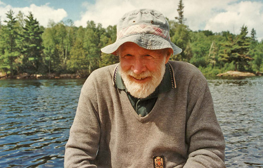

Sedimental Journeys
The Life and Legacy of Herb Wright

This eBook is a collection of essays, articles, tales of field adventures, poems, eulogies, and picture galleries about Herb Wright and his varied life and enormous legacy. They are all by friends, students, and colleagues of Herb.
Chapters
Herbert E Wright, Jr - a biography - by John Birks
Thoughts and Achievements - An essay by Herb Wright for College English 3, written on 14 November 1932
Crash Landing Lizzie - An account of flying a B-17 plane ‘Lizzie’ in 1944 by Herb Wright (transcribed by Dan Engstrom)
List of subsequent missions flown by Herb
Historical notes of LRC - An overview of past members of LRC up to 1994 by Herb Wright
Travels in Kurdistan for the Iranian Prehistoric Project - Photos provided by Bob Megard of the expeditions to Kurdistan in the late 1950s/early 1960s
European palaoecological pioneers in Minnesota 1958-1968 - an account of the early visitor to the LRC by John Birks
A Coring Expedition - an account of coring ‘Qually Pond’, Minnesota in January by Tom Shay
Herb Wright Memorable Events 1961-2015 - photos from Björn E Berglund from meetings with Herb
When Herb Wright had Red Hair - recollections of the fossil pollen years by Jock McAndrews
Adventures in Minnesota 1970: Myrtle Lake to Mantrap Lake - Hilary Birks
The Klutlan Glacier Expedition 1971 - an account of the expedition to survey the Klutlan Glacier area by John Birks
Memories of HEWright - unique occurrences with Herb by Bob Baker
Herb Wright and COHMAP: 1974-1994 - by Tom Webb and John Kutzbach
The Bear and the Rat - memories of camping with Herb Wright by Svante Björck
Adventures on Bermuda and in Florida with Herb Wright and Bill Watts - by John Birks
Travelling with Herb - A photo journal by Brigitta Ammann
Herb Wright - A Picture Gallery - photos by Pim van der Knaap and Jacqueline van Leeuwen of various International Moor Excursions plus other events
The Ice Man of Wengen (written for the celebration of Herb’s 80th birthday in Wengen, Switzerland) - Jim Almendinger
Contributions of Herbert E Wright Jr to Science and Technology - presentation produced for the celebration of Herb’s 90th birthday in Sils, Switzerland by John and Hilary Birks
Where Herb Has Not Yet Gone Before - written for the celebration of Herb’s 90th birthday in Sils, Switzerland by Jim Almendinger
Limnological Research Center Reunion in 2013 - photos collated by Dan Engstrom
A Brief Summary of the Career of H.E. Wright - presentation created by Jim Almendinger
Herb-Al - photos from Al Schneider
Eat Wright - contributed by Hilary Birks
List of publications - compiled by Cathy Jenks and John Birks